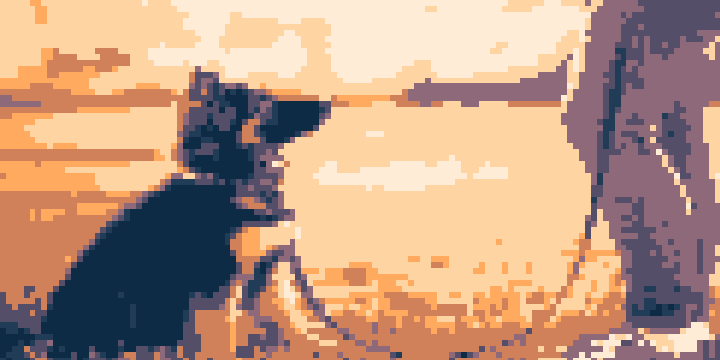
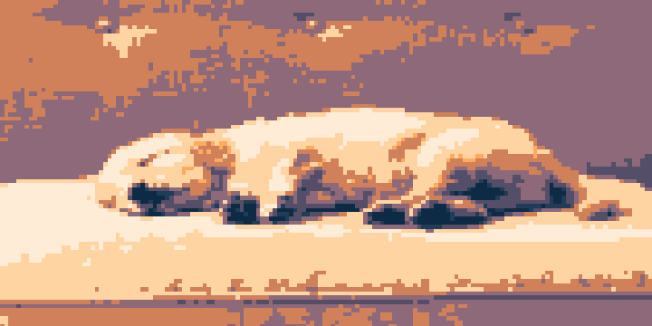

Welcome
to
Choose Your Space
Training Center
This space features carefully curated sounds to help your dog become accustomed to various noises found in the
real world.
Adjust the volume according to your dog's comfort level.
Enter

Playground
Watch as your puppy engages with the stimulating sounds, providing both entertainment and mental exercise.
Adjust the volume according to your dog's comfort level.
Enter
Calm Corner
Enter a serene space filled with sounds that promote relaxation after a long day at play.
Adjust the volume according to your dog's comfort level.
Enter
